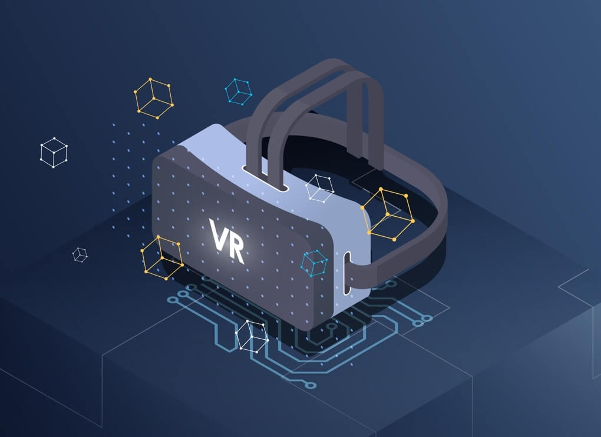

Últimas noticias
Estas son las ultimas novedades en noticias.
Artículo 1: El futuro de la realidad virtual
 La realidad virtual está experimentando un rápido crecimiento en popularidad y desarrollo en los últimos años. Ya se utiliza en muchos campos, desde videojuegos hasta entretenimiento y formación. Pero, ¿cuál es el futuro de la realidad virtual? Muchos expertos creen que en un futuro cercano, la RV será una parte integral de nuestra vida cotidiana, permitiéndonos realizar tareas en un entorno virtual mientras estamos físicamente en otro lugar. Además, también se espera que la RV mejore la forma en que nos relacionamos y nos comunicamos con los demás, brindándonos nuevas formas de colaborar y conectarnos con personas de todo el mundo.
Artículo 2: La inteligencia artificial y sus aplicaciones
La inteligencia artificial (IA) es una tecnología cada vez más importante en el mundo de hoy. Ya se está utilizando en una amplia variedad de industrias, desde la fabricación hasta la atención médica. La IA ayuda a automatizar procesos y a tomar decisiones basadas en datos, mejorando la eficiencia y la precisión. Además, también se está explorando su uso en el desarrollo de tecnologías innovadoras, como robots y vehículos autónomos. A medida que la IA continúa evolucionando, es probable que tengamos aún más aplicaciones sorprendentes y útiles en el futuro cercano.
Productos destacados
Estos son algunos de los mejores accesorios para tu laptop:
-
Mause inalámbrico
Un mouse inalámbrico es un accesorio esencial para cualquier laptop. Le permite trabajar de manera más cómoda y eficiente, especialmente si utiliza su laptop como una computadora principal.
-
Teclado externo
Un teclado externo también es un accesorio útil para cualquier laptop. Ofrece una mayor comodidad y eficiencia para la escritura, y muchos teclados externos cuentan con funciones adicionales como teclas de acceso rápido y diseño ergonómico.
-
Funda para laptop
Una funda para laptop es un accesorio importante para proteger su inversión. Le ayuda a mantener su laptop segura y protegida mientras viaja o la transporta, y también puede ofrecer una mayor comodidad al llevar su laptop de un lugar a otro.
Sobre nosotros
Somos un grupo de estudiantes y graduados de la Universidad La Salle Bajío, una institución educativa con más de 50 años de experiencia en la formación de líderes en México. Nos apasiona la tecnología y creemos en su capacidad de transformar la sociedad para mejorar la vida de las personas.